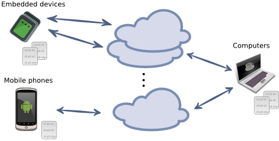
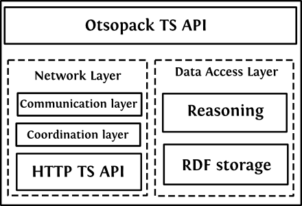
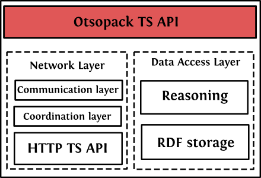
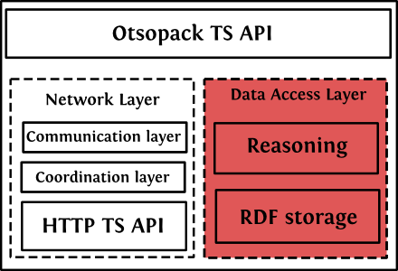
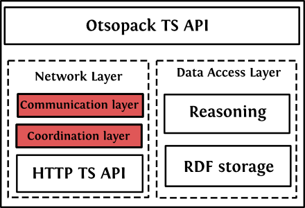

La web semántica
de las cosas
Creado por Aitor Gómez-Goiri / @gomezgoiri
Universidad de Deusto
www.deusto.es
Índice
¿Qué es IoT?
Características de IoT
IoT nos enfrenta a los siguientes retos:
- interoperabilidad
- escalabilidad
- gestión de recursos
- movilidad
- seguridad y privacidad
- fiabilidad
Interoperabilidad
La Interoperabilidad ayuda a abordar la heterogeneidad de tecnologías que existen en IoT.
- Protocolos de red: Zigbee, Bluetooth Low Energy, 6LoWPAN...
- Protocolos de aplicacion: UPnP, DLNA, HTTP...
- Mecanismos de comunicación: orientado a servicios (DPWS, UPnP) u orientado a recursos (WoT)
Escalabilidad
Hace falta hacer frente a una mayor cantidad de dispositivos.
Potencialmente, cualquier objeto puede proveer o consumir datos gracias a dispositivos embebidosMovilidad
Los elementos en IoT suelen ser más dinámicos: cambian de red con relativa frecuencia.
Gestión de los dispositivos
¿Cómo gestionamos de una forma sencilla tantos dispositivos? Manualmente uno a uno resulta complejo...
Seguridad
¿Cómo aseguramos la privacidad y seguridad de los datos en IoT?
Fiabilidad
Existe una cantidad ingente de información generada por múltiples fuentes de datos, ¿de cúal de ellas nos podemos fiar?
Web of Things
Enfoques principales de integración en IoT
- Orientado a servicios: Device Profile for Web Services (DPWS)
- Orientado a recursos: Web of Things (WoT)
WoT: IoT orientado a recursos
¿Por qué no hacer que esos dispositivos formen parte de la WWW?
- Usar estándares bien establecidos: HTTP, JSON, etc.
- Sencillo de adoptar por desarrolladores web guinard_search_2011
- Integración directa con otros servicios REST
- Navegable por parte de los usuarios
Problemas de WoT
- Muchas veces sólo están orientados a su consumo por parte de humanos
- Este es un problema que se ha dado en la WWW, y que ya tiene una solución...
- ¿Y si usamos datos anotados como propone la Web Semántica?
Web semántica
The vision of the Semantic Web is to extend principles of the Web from documents to data. Data should be accessed using the general Web architecture using, e.g., URI-s; data should be related to one another just as documents (or portions of documents) are already. This also means creation of a common framework that allows data to be shared and reused across application, enterprise, and community boundaries, to be processed automatically by tools as well as manually, including revealing possible new relationships among pieces of data.
Triple Space Computing
¿Qué es?
Paradigma de coordinación, donde distintos procesos leen y escriben información semántica en un espacio común.
Ventajas
- Autonomía espacial o de ubicación
- Autonomía de referencia
- Autonomía temporal
- Autonomía del esquema de datos
Autonomía espacial
Los procesos se pueden ejecutar en entornos computacionales completamente diferentes mientras ambos puedan acceder al mismo espacio de tripletas fensel_triple-space_2004.
Autonomía de referencia
Los nodos no necesitan conocerse los unos a los otros..
Autonomía temporal
Gracias a que los nodos se comunican de forma asíncrona.
- Un proceso puede proveer una pieza de información sin preocuparse por que alguien la necesite o use.
- Un proceso puede preguntar por información que no se encuentre en el espacio aún.
Autonomía del esquema de datos
Al seguir la especificación RDF expresa la información de manera independiente al esquema interno de cada nodo.
- puede inferir información no explícitamente definida francisco_towards_2008
- permite mediar entre esquemas de datos heterogéneos usados por los distintos actores francisco_towards_2008
- 2 applicaciones que usen ontologias estándar y el mismo espacio, pueden interactuar a través del espacio transparentemente.
¡TSC encaja perfectamente con enfoques orientados a recursos!
(en este caso, espacios, grafos y tripletas son los recursos que se leen y se escriben)Otsopack
Distribución de la información
Sobre la descentralización
- El usuario puede llevar su información de perfil de un lugar a otro
- Los datos provistos por los sensores se actualizan constantemente, por lo que interrogandoles directamente accederemos a los ultimos
- La web semantica añade sobrecargas
- Seguridad
Módulos de Otsopack
(cada instancia de Otsopack)
API TS
Los desarrolladores que usan nuestro middleware usan las primitivas de escritura y lectura.
Acceso a datos
Para almacenar conocimiento y razonar sobre él.
Comunicaciones
- Descubre nuevos nodos
- Consume el API HTTP de otros nodos
Sobre TSC y HTTP
Los verbos HTTP devuelven, crean, modifican o eliminan recursos web
Las primitivas TS devuelven, crean, modifican o eliminan grafos RDF de un espacio
(de acuerdo, para ser completamente honestos también ofrecemos una primitiva query, que trabaja a nivel de espacio)Un API HTTP RESTful
- Para exponer las primitivas TS
- Usa HTTP status codes
- Usa content negotiation
Con ello facilitamos su adopción por parte de múltiples plataformas
(XBee, FoxG20, móviles Android y ordenadores de todo tipo)Lecciones aprendidas
- En pequeños escenarios parece complejo usar semántica, pero los beneficios de describir los datos ricamente se ven en el largo plazo, en la medida en la que más aplicaciones comparten y explotan información mutua.
- El desarrollador se abstrae de acceder a distintos dispositivos, y sólo se preocupa de los datos compartidos en el espacio conceptual.
- También se puede navegar por la información de cualquier dispositivo como en cualquier otra solución WoT.
- Además, la información de cada dispositivo se puede consumir por aplicaciones web externas al middleware.